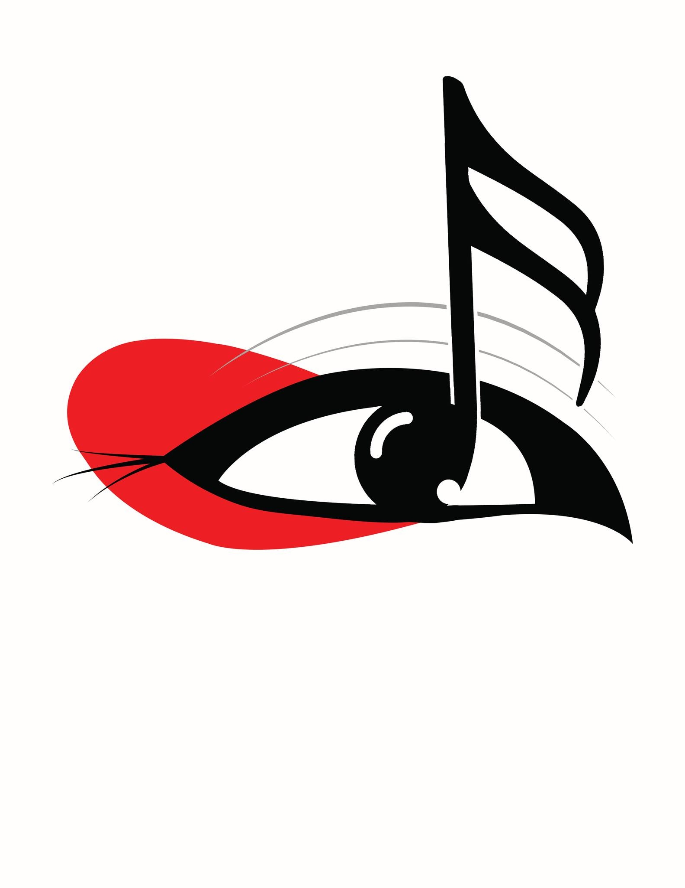
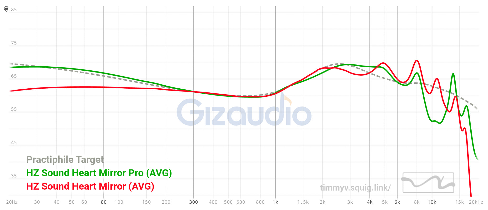
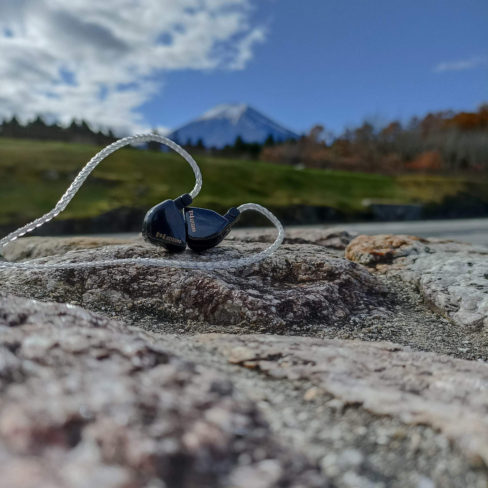

PRACTIPHILE
• The HM PRO sports a very well thought of packaging. The company is very generous in providing Two cables! Yes two cables!
• One cable is a standard high purity OFC silver plated wire with a microphone, and the other is braided OFC silver plated cable with interchangeable termination.
• The package also incudes a carrying case whis is really sturdy and very elegant looking with those gold accented zippers. Classy.
• A lot of eartips. I mean a lot haha. -They have 1 pair of foam tips. -sony clones in SML-small bore tips in SML-wide bore tips in SML
The HM Pro is a warm U-shaped set. It has got enough bass that "might" please bass heads. Mids are warm and lush that makes vocals sound natural and organic. Treble presentation is smooth without peaks but lacks a bit of sparkle up top to compensate for the quantity of bass. Bass on HM Pro is a really big jump from the original Heart Mirror. There is almost a whooping 10 db difference in subbass, and probably around 5 db in midbass. You will notice it, and yes they slam. Although I find the decay to be rather slow and the attack is a little blunted. It feels like the DD is struggling for air to breath. I am not sure what they did, but it sounded like a Y4 filter mod on the OG HM. There is good macro dynamics for the PRO, and at the same time, all my attention is always shifted to the lower region because of how apparent the bass is. Other than that, I find the bass to be still rather controlled and detailed. It resolves bass guitars pretty well and drop Ds are not a problem. This is not just a bassy IEM, this is well done bass in terms of separation of subbass and midbass. If the OG Heart Mirror is the master of high frequencies, this PRO is doing wonders in the lower regions. Every bass drum hit is distinct from bass guitars in djents and that is freakin impressive.
Mids are lush and organic. I kinda like the timbre of instruments and vocals with the PRO. Although the vocals are a bit recessed, they have enough definition and center imaging is very good. There is minimal bleed from bass into the lower mids that is why it has this tinge of warmth to them. Going back to vocal center imaging, I really like it a lot because it presents this realism that other sets struggle to do. There is enough space between vocals and instruments wherein they do not overlap even in busy tracks. The natural and organic timbre is favoring male vocals and acoustic guitars. Percussions like snare drums have good snap and doesn’t over emphasize air in the last decay. Very good harmonics with just the right amount of edge and bite without being too aggressive.
Treble is smooth and it is the complete opposite of OG Heart mirror. I cant say the PROs are less detailed, but it definitely is not forward compared to its predecessor. You get enough micro nuance that can compliment the upper midrange, just to give that extra bite and edge. It is not overdone but I think it will stand out more had there been a few dbs deduction in midbass. Anyhow, I do not get any peaks, fatigue or sibilance from the PROS. It is a smooth and fun listen overall. The tuning is too safe that I cant say much haha.
Technicalities on these are not bad, and not great either for the price. There have been a lot of nicely tuned sets right now in the sub $100, not to mention planars and hybrids that are now on hype. When we do not put the price into consideration, I can easily praise how the HM PRO handles center imaging ang vocal tone. I think this has something to do with the width of stage. The HM PRO kind of shares the same stage proportion as the OG HM. One of my quirks on the OG HM is the narrow staging, but the air frequencies of HM helps a lot in making them open sounding. Now with the PRO, upper treble is significantly reduced and so my attention is shifted to either the bass and upper mids. But because the stage is narrow, you also get every slam of bass right at the center when there are no vocals singing haha. It’s the deep throat kind of center imaging wherein every hit makes you gag, either in pleasure or disappointment. Okay lets stop there haha. Other aspects like layering detail retrieval are probably just average. I am really trying my best to look for things that can make it stand out as a "pro", although stage depth is commendable, I think that you can also find good sets that can do this at a lower price.
11.5( B+ rank, generally good. You can safely buy them if it matches your preferred tonality, although there might be a bit of compromise in price to performance)
The Hzsound Heart Mirror Pro is in a tight spot. If this signature was released a year or even months ago, this could have gotten more hype and attention. But since other companies have made their move ahead of the HM PRO, it is really difficult to recommend the HM PRO at its price.
Sure, they sound good, and they offer better accessories compared to other sets. The HM PRO can be really beneficial to those people who have less IEMs in their collection, because they will get more cables and accessories to play with. But for those of you who has like 10 or 20 sets already, you guys already have a staple cable and eartips to use. You only care about how they sound , which would then render the added accessories of the HM PRO useless.
This is the truth about the Hzsound Heart Mirror PRO- a dark reflection in both color and the spot where they are at. A dark spot that is..